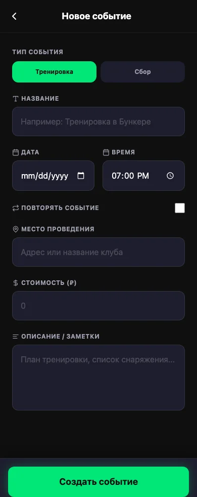
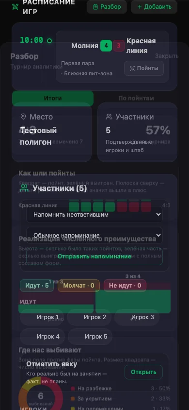

Что может делать тренер
- Создавать тренировки и сборы.
- Создавать несколько повторяющихся тренировок.
- Отмечать участников.
- Записывать результаты игр.
- Добавлять заметки к игровым отрезкам.
- Смотреть итоговый разбор события.
Создать тренировку или сбор
Что сделать
- Нажмите кнопку создания события.
- Выберите «Тренировка» или «Сбор».
- Укажите дату, время и место.
- Для повторяющихся занятий создайте сразу несколько событий.
- Сохраните.

Что получится
Участники увидят новое занятие и смогут сообщить, придут они или нет.
Отметить участников
Что сделать
- Откройте тренировку или сбор.
- Посмотрите ответы команды.
- Отметьте тех, кто фактически участвовал.

Что получится
Будет сохранён точный состав занятия. Эти данные можно использовать при последующем разборе.
Записать результаты и заметки
В приложении отдельный отрезок игры называется пойнтом.
Что сделать
- Откройте нужную игру.
- Запишите счёт: результат нашей команды указывается слева.
- Для каждого пойнта выберите «Выиграли» или «Проиграли».
- Проверьте, что количество побед и поражений совпадает со счётом.
- Добавьте короткие наблюдения по игре.

Что получится
Результаты и наблюдения будут сохранены и попадут в итоговый разбор события.
Посмотреть итоговый разбор
Что сделать
- Откройте событие.
- В разделе «Расписание игр» нажмите «Разбор».
- Откройте вкладку «Итоги».
- Посмотрите:
- общий результат;
- последовательность побед и поражений;
- где и когда команда чаще теряла игроков;
- какие действия приносили лучший результат;
- какие проблемы повторялись;
- насколько полно участники заполнили данные.

Что получится
Тренер получит конкретные темы для следующего занятия: что повторить, что изменить и чему уделить больше времени.
Что тренер не может изменять
- Создавать и редактировать турниры и чемпионаты.
- Приглашать и удалять участников команды.
- Менять роли участников.
- Управлять деньгами, сборами, долгами и штрафами.
Для этих действий нужно обратиться к капитану.
Короткая памятка тренера
- Перед занятием: создать тренировку или сбор.
- На занятии: отметить участников.
- После игры: записать счёт, победы и поражения.
- После события: добавить наблюдения и посмотреть итоговый разбор.
- Организация турниров, состав и деньги — ответственность капитана.